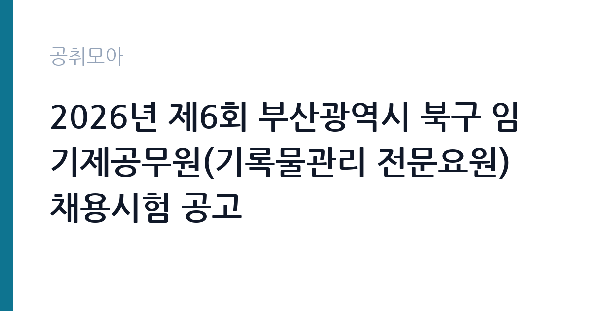

[지자체] 2026년 제6회 부산광역시 북구 임기제공무원(기록물관리 전문요원) 채용시험 공고
부산광역시 북구 · 부산 · 마감 2026-10-13 (D-16) · 출처 나라일터

한눈에 보는 모집 조건
| 기관 | 부산광역시 북구 |
|---|---|
| 공고명 | 2026년 제6회 부산광역시 북구 임기제공무원(기록물관리 전문요원) 채용시험 공고 |
| 고용형태 | 임기제 |
| 근무지 | 부산 |
| 게시일 | 2026-09-27 |
| 마감일 | 2026-10-13 (D-16) |
지원자격, 이렇게 읽으세요
- 지방행정서기 1명
- 접수 ~2026-10-13 마감
- 세부 조건은 원문 공고문 확인
기록물관리 전문요원은 공공기록물 관리에 관한 법률에서 정한 자격을 갖춘 분이 대상입니다. 일반적으로 기록관리학 석사학위 소지자 또는 소정의 기록관리 교육과정을 이수하고 관련 경력을 갖춘 분이 해당하며, 정확한 응시 자격은 첨부된 공고문(hwpx)의 응시 자격 항목에서 확인하셔야 합니다. 일반임기제 공무원 시험이므로 학력과 경력 심사를 거쳐 선발되며, 결격사유 해당자는 지원할 수 없습니다. 자격증 사본과 경력증명서, 학위증명서 발급에 시간이 걸리므로 접수 시작 전에 미리 준비하십시오.
이 공고의 포인트
이 공고의 강점은 직렬의 희소성입니다. 기록물관리 전문요원은 채용 인원이 적고 응시 자격이 법령으로 정해져 있어 자격을 갖춘 분에게는 경쟁 부담이 낮은 시험입니다. 일반임기제 지방행정서기는 9급 상당 직급으로 구청 기록관에서 안정적으로 근무할 수 있습니다. 부산 북구 근무로 부산과 경남 거주자에게 접근성이 좋습니다. 접수 기간이 7일로 짧지 않아 서류를 차분히 준비할 수 있다는 점도 장점입니다.
전형은 어떻게 진행되나
일반임기제 경력경쟁임용시험으로 서류전형과 면접시험을 거쳐 선발합니다. 접수는 10월 7일부터 10월 13일까지 부산 북구청 방문 접수 또는 빠른등기 우편 접수로 진행됩니다. 우편 접수는 마감일 도착분 기준인 경우가 많으므로 10월 10일 이전에 발송하는 것이 안전합니다. 문의처는 북구청(051-309-4107)이며 서류 미비 시 보완 요청이 올 수 있으니 연락 가능한 번호를 정확히 기재하십시오.
원문에서 확인한 전형 방식
○ 모집분야 : 기록물관리 전문요원 ○ 모집인원 : 1명 ○ 선발직급 : 지방행정서기(일반임기제) ○ 접수기간 : 2026.10.7.~10.13. ○ 응시방법 : 방문접수, 우편접수(빠른등기) ○ 문의처 : 051-309-4107
이런 분께 추천해요
- 기록관리학을 전공하고 기록물관리 전문요원으로 일하고 싶은 분께 적합합니다.
- 도서관과 기록관, 문서고 관련 경력을 살려 구청 기록관에서 근무하고 싶은 분께 잘 맞습니다.
- 부산 지역에서 9급 상당 임기제로 안정 근무를 원하는 분께 좋습니다.
지원 전 체크리스트
- 보유 학위와 자격이 법령상 기록물관리 전문요원 자격에 해당하는지 확인하셨습니까.
- 접수 방법이 방문과 우편 중 어느 것인지 정하고 일정을 잡으셨습니까.
- 우편 접수 시 마감일 도착 기준인지 공고문에서 확인하셨습니까.
- 경력증명서와 학위증명서 발급 소요 시간을 계산해 미리 신청하셨습니까.
모집 일정과 제출 타이밍
10월 7일 접수가 시작되어 10월 13일에 마감됩니다. 이후 서류전형 합격자 발표와 면접시험, 최종합격자 발표 순으로 진행되며 임용은 합격자 발표 이후 별도 안내에 따릅니다. 우편 접수자는 10월 10일 이전 발송을 권장하며, 등기 조회로 도착 여부를 확인하십시오. 면접 일정은 서류전형 합격자 발표 시 함께 공지되므로 나라일터 공고와 북구청 홈페이지를 수시로 확인하는 것이 좋습니다.
직무 이해하기: 지자체
기록물관리 전문요원은 구청 기록관에서 생산된 행정 기록물의 분류와 정리, 보존과 활용을 맡습니다. 기록물 이관 심사와 폐기 심의, 정보공개 청구 대응, 기록관 시스템 운영이 주요 업무입니다. 공공기록물 관리에 관한 법률에 따라 기록물의 생애주기를 관리하므로 법령 이해가 필수이며, 행정 정보공개와 개인정보 보호의 균형을 맞추는 판단력이 필요합니다. 구청 각 부서와 협업하므로 문서 행정 전반에 대한 이해가 도움이 됩니다.
자기소개서 작성 팁
자기소개서에는 기록관리 전공 지식과 실무 경험을 연결해서 작성하십시오. 분류와 정리, 기술(記述) 업무 경험과 사용해 본 기록관리 시스템을 구체적으로 적으면 신뢰도가 높아집니다. 정보공개와 개인정보 보호 사이에서 판단했던 경험이 있다면 사례 중심으로 서술하는 것이 좋습니다. 구청 기록관은 시민의 정보 접근권을 지키는 자리이므로 공공성과 책임감을 드러내는 문장을 포함하십시오.
면접 준비 포인트
면접에서는 기록물관리 실무 지식과 법령 이해도를 묻는 경우가 많습니다. 기록물의 평가와 폐기 절차, 정보공개 청구 처리 흐름을 정리해 가십시오. 실제 구청 기록관에서 겪을 수 있는 상황형 질문이 나올 수 있으니 부서 협조와 민원 대응 경험을 준비해야 합니다. 임기제 공무원으로서 계약 기간 안에 남길 성과 계획을 구체적으로 말하면 좋은 평가를 받을 수 있습니다.
급여·근무조건 읽는 법
원문에 보수 금액이 명시되어 있지 않으므로 첨부 공고문의 보수 항목에서 확인하셔야 합니다. 일반임기제 지방행정서기는 지방공무원 보수규정의 임기제 연봉표에 따라 연봉이 책정되며, 경력과 호봉에 따라 금액이 달라집니다. 정확한 연봉 하한액과 상한액, 수당 구성은 공고문 원문에서 확인하십시오. 임기제 공무원은 계약 기간과 연장 조건이 보수만큼 중요하므로 임용 기간 조항도 함께 읽어보시기 바랍니다.
자주 묻는 질문
- 기록물관리 전문요원 자격이 정확히 무엇입니까?
공공기록물 관리에 관한 법률에서 정한 자격으로 기록관리학 석사학위 소지자 또는 소정 교육과정 이수자와 관련 경력 보유자 등이 해당합니다. 정확한 기준은 첨부 공고문의 응시 자격 항목에서 확인하십시오. - 우편 접수 시 마감일 소인이면 됩니까?
지방자치단체 채용은 마감일 도착분 기준인 경우가 많으므로 소인 기준이 아닙니다. 10월 10일 이전에 빠른등기로 발송하고 도착 여부를 확인하십시오. - 임기제 공무원은 계약 연장이 됩니까?
근무 실적과 기관 사정에 따라 연장될 수 있지만 보장되는 것은 아닙니다. 임용 기간과 연장 조건은 원문 공고문에서 확인하십시오.
함께 보면 좋은 공고
[지자체] 2026년 제5회 의왕시 임기제공무원 채용시험 시행계획 공고 — 마감 2026-10-08[지자체] 2026년도 제1회 해남군 시간선택제임기제공무원 경력경쟁채용시험 시행계획 재공고 — 마감 2026-10-08[지자체] 2026년 제1회 함안군의회 임기제공무원(정책지원관) 채용 공고 — 마감 2026-10-07출처: 나라일터 공개정보를 바탕으로 공취모아가 정리한 안내글입니다. 모집 조건·일정은 변경될 수 있으니 지원 전 반드시 원문 공고문을 확인하세요. 본 글은 정보 제공용이며 합격을 보장하지 않습니다.